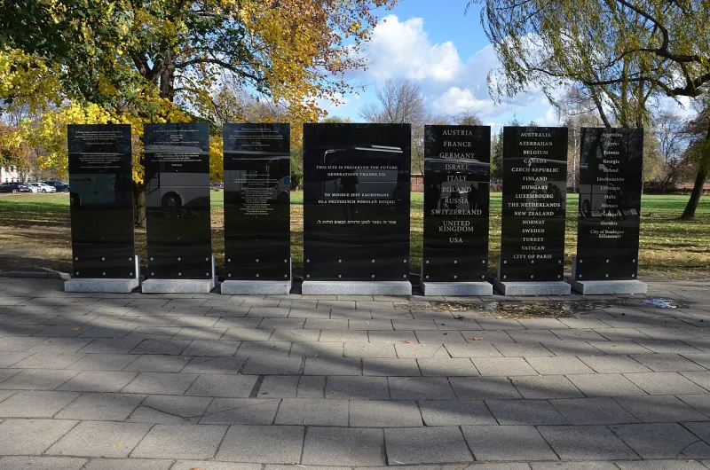

Anne Frank baptised by proxy at least nine times
AdmittedTheir own church publications admit these facts. You can make this point from LDS sources alone.
What happened
Members performed proxy baptisms for hundreds of thousands of Holocaust victims. Jewish organisations protested.
In 1995 the church signed an agreement to remove the names and stop, except for members' own direct ancestors.
What happened after that
The researcher Helen Radkey documented violations for two decades. Anne Frank's name was submitted at least a dozen times, and the ordinance performed at least nine times.
One was at the Santo Domingo Temple in February 2012, and the church condemned it. Early in 2012, Simon Wiesenthal's parents were baptised by proxy.
The church apologised formally to the family.
The doctrine underneath
D&C 128:15 says the dead "cannot be made perfect" without our ordinances, and that this work is "essential to our salvation." It rests on one disputed verse, 1 Corinthians 15:29. Against it stand Hebrews 9:27, where judgment follows death, and Luke 16:26, where a fixed gulf separates the dead.
Alma 34:32-35 makes the same point.
Their answer, at full strength
That proxy baptism compels nobody. The teaching is that the dead may accept or reject it, so it is an offering rather than a conversion.
The institution honoured the 1995 agreement, and each documented violation was an individual member acting against explicit policy. And the church acted: names removed, database blocks engineered in 2010, apologies made to families, and warnings that violators lose temple privileges or face discipline.
How strong is this argument?
They admit this themselves. The practice, the agreement, the years of violations, and the apologies are all conceded.
The individual-members defence is fair as far as it goes. It also concedes the systemic point.
A doctrine that makes this work essential to salvation creates a pressure that policy could not hold for twenty years. Handle it gently; these are real families.
What to say
"Hebrews 9:27 says judgment comes after death. How do the temple ordinances fit that?"


How they answer this — at its strongest
The dead may accept or refuse, and each violation broke stated church policy.
The church and Mormonr reply that proxy baptism forces nobody. The teaching is that the dead may take it or refuse it. So it is an offer, not a conversion after death.
The church kept the 1995 agreement. Each case on record was one member acting against a stated rule.
And the church acted. It took names out. In 2010 it built blocks into the database for Holocaust victims. It said sorry to families. And it warned that anyone doing it again may lose temple access, or face a church court.
The verdict
They admit this, and handle it gently: these are real families.
Every load-bearing fact is conceded by the church itself. The practice happened. The 1995 agreement existed. Violations went on for two decades. And the church publicly condemned and apologised for specific cases, including Anne Frank and the Wiesenthals.
The individual-members defence is fair as far as it goes. It also concedes the systemic point. A doctrine that makes ordinances for the dead 'essential to our salvation' creates a pressure that policy could not hold for twenty years.
The deeper use here is doctrinal. The whole temple-for-the-dead system hangs on one disputed verse, 1 Corinthians 15:29. Read it against Hebrews 9:27, Luke 16:26, and even Alma 34:32-35.
Sources
- KSL: LDS Church issues statement after report of proxy baptism for Anne Frank
- CBS News: Mormons apologize to Wiesenthal family for posthumous baptism
- Fox 13: LDS Church condemns recent proxy baptism of Anne Frank
- Mormonr: Holocaust Victims and Baptisms for the Dead